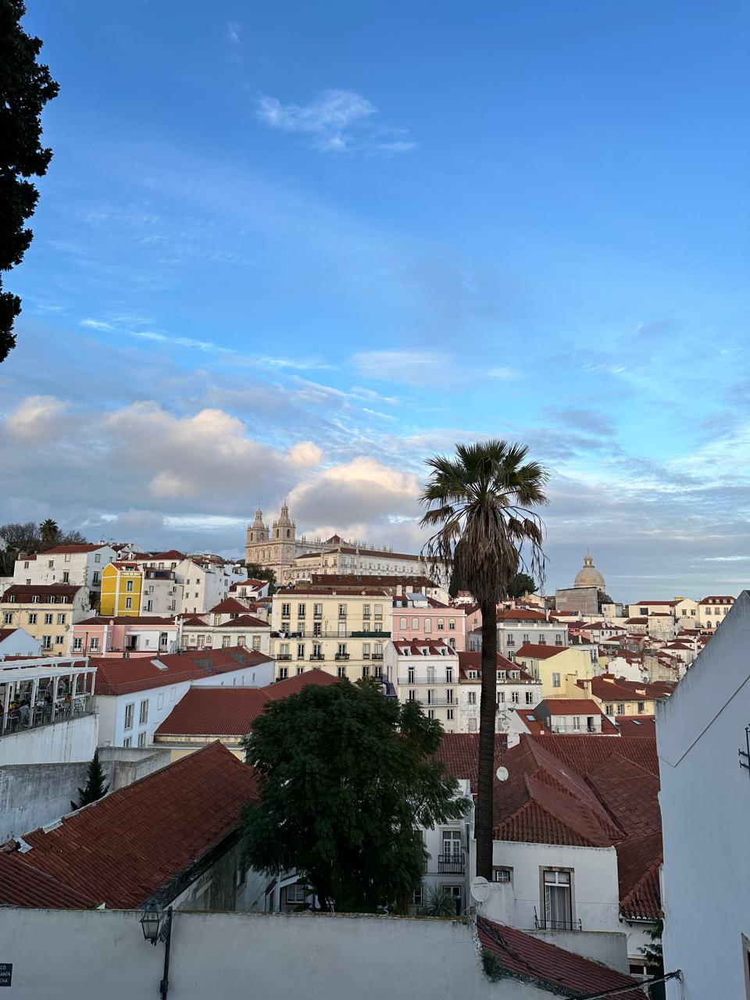

Lisbon: Discover the City of Seven Hills and Endless Stories
Lisbon captivates at every step, with a unique blend of history, stunning landscapes, and contemporary vitality. From its steep hills adorned with colorful tiles to the vibrant, lively neighborhoods, Portugal’s capital is a place where deeply rooted traditions coexist with modernity. Begin your journey in the iconic Alfama district, the oldest in the city, where narrow cobbled streets seem to whisper tales of times long past. Here, the sound of fado (the melancholic Portuguese music) drifts through windows, enveloping visitors in a nostalgic atmosphere.
After exploring the old town, head toward Lisbon’s nearby beaches, like Costa da Caparica or Carcavelos. Here, the Atlantic Ocean gently laps the shores, and sunny days invite you to relax on the sand or enjoy water sports. The coastal views, with cliffs and stretches of golden sand, bring a natural touch to the city’s urban charm. Continue to Bairro Alto, where Lisbon’s nightlife comes alive. This vibrant, youthful area reflects the city’s innovative spirit, with modern bars, street art, and an energy that never fades. As evening falls, don’t miss viewpoints like Miradouro da Senhora do Monte or Miradouro de Santa Catarina, where sunsets paint the sky over the Tagus River in golden and pink hues, creating an unforgettable scene. But don’t stop there: around every corner in Lisbon, there’s a story, a breathtaking view, or a small bakery offering the famous pastéis de nata. Discovering Lisbon means losing yourself in its labyrinthine streets, exploring its unique architecture, and immersing yourself in a culture that, while maintaining its essence, has evolved with the times. From the majestic Jerónimos Monastery to the modern Parque das Nações, the city offers an unforgettable experience for those eager to explore its past, its landscapes, and its vibrant present.